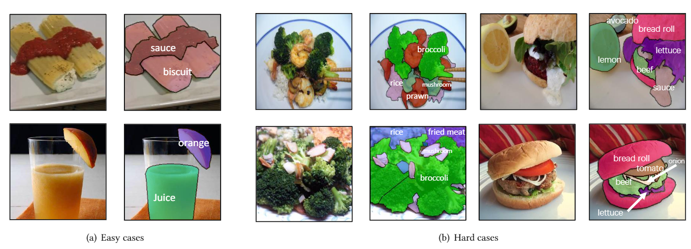
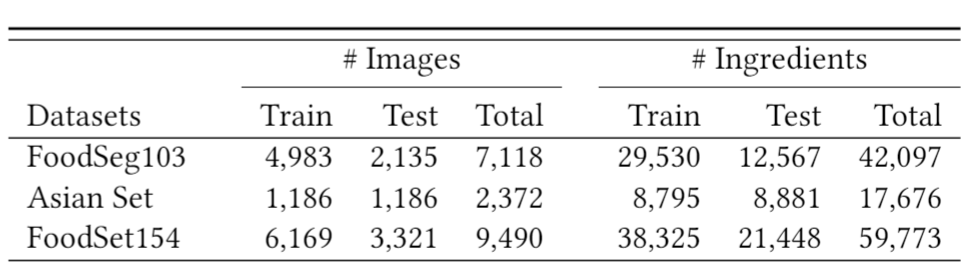
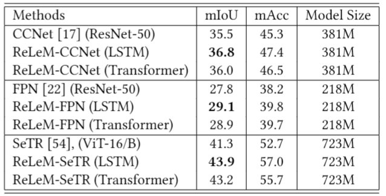
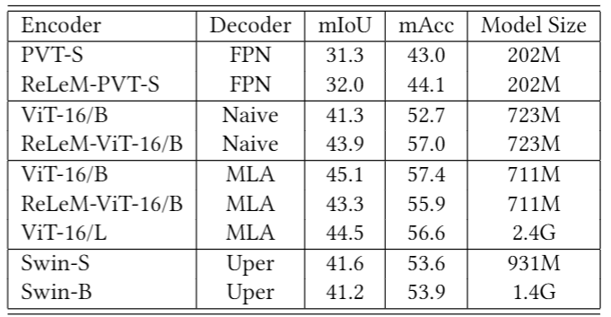

Food image segmentation is a critical and indispensible task for developing health-related applications such as estimating food calories and nutrients. Existing food image segmentation models are underperforming due to two reasons: (1) there is a lack of high quality food image datasets with fine-grained ingredient labels and pixel-wise location masks---the existing datasets either carry coarse ingredient labels or are small in size; and (2) the complex appearance of food makes it difficult to localize and recognize ingredients in food images, e.g., the ingredients may overlap one another in the same image, and the identical ingredient may appear distinctly in different food images.
In this work, we build a new food image dataset FoodSeg103 (and its extension FoodSeg154) containing 9,490 images. We annotate these images with 154 ingredient classes and result in an average of 6 ingredient labels and pixel-wise masks per image. In addition, we propose a multi-modality pre-training approach called ReLeM that explicitly equips the model with rich and semantic food knowledge. In experiments, we use three popular semantic segmentation methods (i.e., Dilated Convolution based, Feature Pyramid based, and Vision Transformer based) as baselines, and evaluate them as well as ReLeM on our new datasets. We believe that the FoodSeg103 (and its extension FoodSeg154) and the pre-trained models using ReLeM can serve as a benchmark to facilitate future works in fine-grained food image understanding.
Explore
Easy and hard examples in FoodSeg103

ImageSets

Baseline on FoodSeg103

Vision Transformer Results on FoodSeg103

Visualization results of ReLeM-CCNet and CCNet on FoodSeg103.
@article{wu2021foodseg,
title={A Large-Scale Benchmark for Food Image Segmentation},
author={Wu, Xiongwei and Fu, Xin and Liu, Ying and Lim, Ee-Peng and Hoi, Steven CH and Sun, Qianru},
journal={arXiv preprint arXiv:2105.05409},
year={2021}
}
![]()